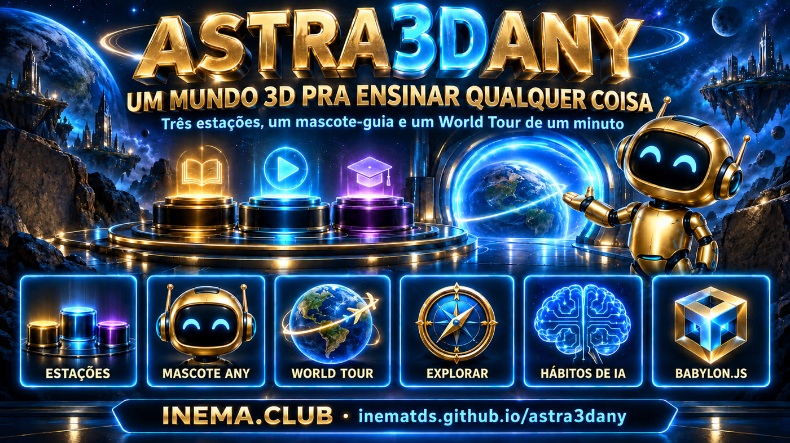
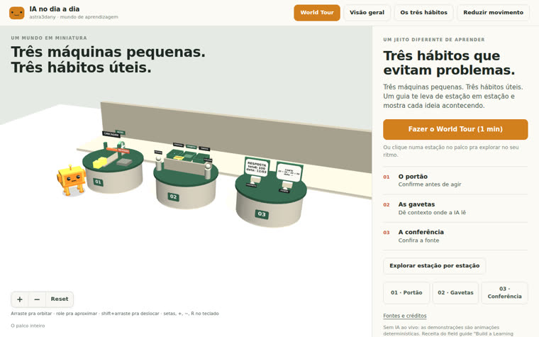
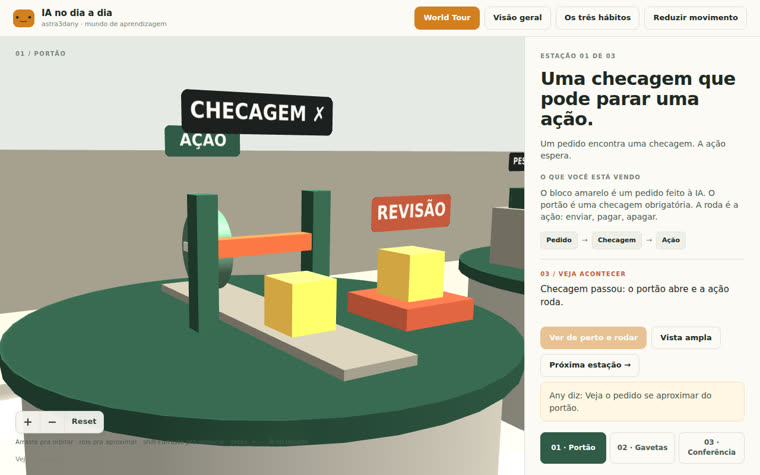
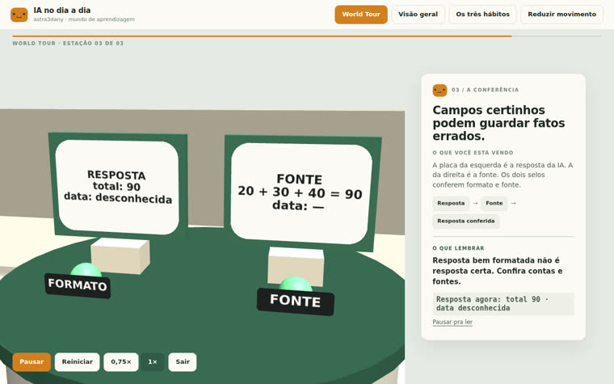
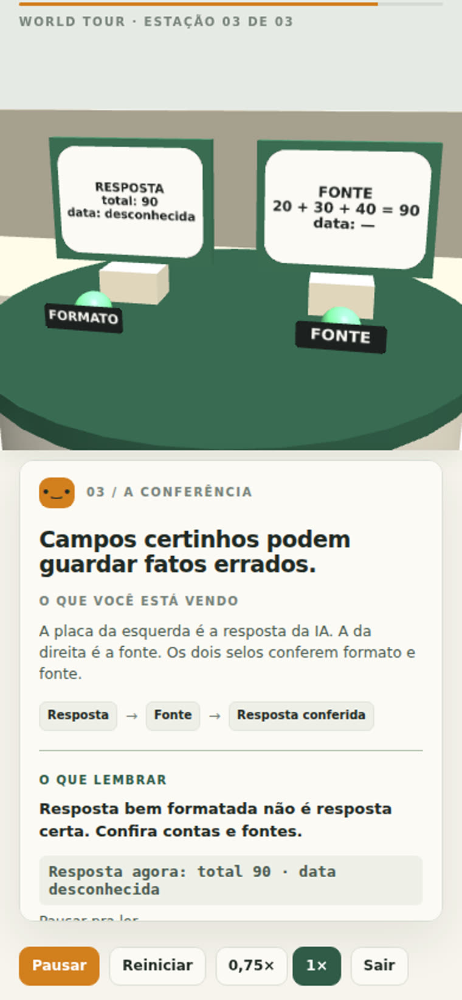

Tres estaciones, una mascota guía y un World Tour de un minuto. Cada estación muestra una idea en acción. El primer mundo enseña tres hábitos para usar IA en el día a día.

No es un video ni una diapositiva: es un escenario en miniatura en el navegador. El estudiante recorre el espacio, hace clic en un pedestal, ve cómo funciona la máquina y lee al lado qué está pasando y qué debe recordar.
Un minuto guiado: llegar (3 s) → acercarse (3 s) → mostrar (6 s) → mantener el resultado (5 s) en cada estación, con una tarjeta sincronizada con la acción. Pausar, reiniciar, cambiar la velocidad, salir.
Orbitar, acercar, desplazar, restablecer. Al hacer clic en un pedestal, se abre la estación, se ejecuta y se repite la demostración a tu ritmo. Teclado, mouse y pantalla táctil.
Todo el texto y las estaciones están en un único archivo de configuración. Para enseñar otra cosa, edita ese archivo; la cámara, las tarjetas y el tour siguen iguales.
Sigue la guía del field guide Build a Learning World (Mark Kashef, Early AI Adopters): seis partes, ritmo de cámara fijo y una checklist de aceptación. El mundo actual enseña tres hábitos:
Una solicitud llega a una puerta cerrada y pasa a revisión. La segunda supera la verificación: la puerta se abre y la rueda (la acción) gira. Pídele a la IA que confirme antes de enviar, pagar o borrar.
Una tarjeta de instrucciones entra en el cajón del proyecto y los dos compañeros quedan conectados. Guarda las instrucciones en un solo lugar; todos, incluida la IA, leen lo mismo.
El formato de la respuesta funciona, pero la fuente dice 20 + 30 + 40. El total da 90 y la fecha queda pendiente por falta de fuente. Una respuesta bien presentada no es una respuesta correcta.
El sitio es 100% estático. No intervienen backend, clave de API, base de datos ni Blender.
Chrome, Edge, Firefox o Safari 15+. No necesitas una GPU dedicada, pero ayuda. Funciona en el celular.
# abrir el mundo publicado https://inematds.github.io/astra3dany/app/
Solo para ejecutarlo localmente o cambiar el tema. Desarrollado y probado con Node 24.
node -v # v20 o más reciente npm -v
Para clonar el repositorio. Las versiones de Vite y Babylon.js están fijadas en package-lock.
git clone https://github.com/inematds/astra3dany.git
Los pasos 1 y 2 son para quienes solo quieren visitar. Del 3 en adelante, para quienes quieren ejecutarlo localmente o enseñar otra cosa.
Abre el mundo y haz clic en el botón naranja World Tour. En un minuto, la cámara visita las tres estaciones, ejecuta cada demostración y mantiene el resultado mientras la tarjeta explica. Al final aparece el resumen con los tres hábitos.
https://inematds.github.io/astra3dany/app/ # Pausar/Reanudar · Reiniciar · 0,75× · Salir (o Esc)
Haz clic en un pedestal (o en los botones 01/02/03). Ver de cerca y ejecutar acerca la cámara y ejecuta la demostración; Repetir gira de nuevo; Vista amplia retrocede. Fuera del tour, la cámara es libre:
| Acción | Mouse | Teclado | Táctil |
|---|---|---|---|
| Orbitar | arrastrar | flechas | un dedo |
| Acercar / alejar | rueda, botones + y − | + / − | pellizcar |
| Desplazar (pan) | shift + arrastrar, botón derecho | — | dos dedos |
| Volver al encuadre | Restablecer | R | Restablecer |
Agrega ?diagnostics a la URL para ver los fps y la resolución. El botón Reducir movimiento cambia las animaciones de cámara por cortes secos (y respeta la preferencia del sistema).
Clona, instala las versiones fijadas e inicia el servidor de desarrollo.
git clone https://github.com/inematds/astra3dany.git cd astra3dany/game npm ci # Vite 8.2.2 + Babylon.js 9.25.0, exactamente como en el lock npm run dev # http://127.0.0.1:43220
Edita game/src/mundo.config.js: título, intro, público, mascota y las tres estaciones (nombre, principio, explicación, secuencia, observaciones por segundo de la demostración, takeaway y poses de cámara). Todo el texto del sitio viene de ahí.
// game/src/mundo.config.js — una estación { id: 'portao', demo: 'portao', x: -3, principio: 'Confirme antes de agir', titulo: 'Uma checagem que pode parar uma ação.', sequencia: ['Pedido', 'Checagem', 'Ação'], observacoes: [[1.5, 'O pedido se aproxima…'], [2.8, 'Checagem falhou…'], [6, 'Checagem passou…']], takeaway: 'Peça pra IA confirmar antes de agir: enviar, pagar, apagar.', camera: { wide: {…}, closeStart: {…}, closeEnd: {…} }, }
¿Necesitas una mecánica nueva? Crea un módulo en game/src/estacoes/ con { reset(), update(demoTime), foco, pick } y regístralo en DEMOS en el main.js. Los tres existentes sirven de modelo.
Las pruebas leen la configuración y verifican la duración, los 5 s de pausa y las frases por fase. Después, revísalo en el navegador: vista amplia, primer plano, mitad de la demostración y resultado, tanto en computadora como en celular.
npm test # 7 pruebas de timeline y subtítulos (node --test) npm run build # genera ../app/ (estático, rutas relativas) npm run preview # http://127.0.0.1:43221 — inspecciona el build que se publicará
Haz commit de la carpeta app/ y haz push. GitHub Pages sirve desde la raíz de la rama main; el mismo build funciona en Vercel, Netlify o Here.Now apuntando a app/.
git add app && git commit -m "build" && git push # app: https://inematds.github.io/astra3dany/app/ # guía: https://inematds.github.io/astra3dany/guia/
Capturas de la inspección (desktop de 1280 px y celular de 390 px). El informe completo está en evidence/revisao.md en el repositorio.




Para que no lo descubras en el momento equivocado.
Blender no estaba disponible en la máquina de build, así que Any se genera de forma procedural. Se puede integrar un GLB hecho en Blender mediante el config (piernas Perna1..4 ganan el nivel).
1,2 MB comprimido, debido a Babylon.js. La primera carga en 4G tarda unos segundos; todavía no hay code-splitting.
Se inspeccionaron desktop y celular en Chromium sin GPU. Todavía no se usaron dispositivos físicos, Safari, Firefox ni gestos táctiles reales; los fps medidos no representan un dispositivo real.
Las demostraciones son animaciones deterministas. La voz, la música y las preguntas quedan para una próxima versión.
Textos en portugués, en el config. No hay i18n; traducir es copiar el config.
Botones y paneles navegables con el teclado, tarjeta del tour en aria-live, reduced-motion. La escena 3D en sí no tiene descripción más allá de las tarjetas.
En el orden en que marcan la diferencia para quien aprende.